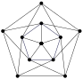

Çizge Teorisi (#2): Düzlemsel Çizgeler ve Euler Formülü
Alıştırmalar
6 köşe, 10 kenar ve 5 yüze sahip bir düzlemsel çizgenin olması mümkün mü? Açıklayınız.
G çizgesi 2, 2, 3, 4, 4, 5 dereceli 6 köşeye sahiptir. G’nin kaç kenarı vardır? G düzlemsel olabilir mi? Eğer öyleyse, kaç yüzü olur? Eğer olamazsa, açıklayınız.
7 köşesi ve 10 kenarı olan bir bağlantılı çizgenin, kenarların kesişmediği ve 4 yüz oluşturacak şekilde çizilmesi mümkün mü? Açıklayınız.
Euler’in formülü size ne söyler?
10 köşe ve kenara sahip bir çizgenin bağlantılı bir düzlemsel çizge olması mümkün mü? Açıklayınız.
Her köşesi 6 dereceye sahip ve tek sayıda yüze sahip bir bağlantılı düzlemsel çizge var mı? Cevabınızı kanıtlayınız.
Kenar sayısını, v (köşe sayısı) cinsinden bulmak için el sıkışma lemmasını kullanabilirsiniz.
12 yüzü olan bir çokyüzlü düşünün. Yüzlerin yedisi üçgen ve dördü dörtgen olsun. Çokyüzlünün son yüzü etrafında 11 köşesi var. Son yüzün kaç kenarı vardır?
Bazı klasik çokyüzlüleri düşünelim.
Oktahedron, 8 eşkenar üçgenden oluşan düzenli bir çokyüzlüdür (iki piramidin tabanları yapıştırılmış gibi görünür). Bir oktahedronun düzlemsel çizge temsilini çizin. Bir oktahedron (ve çizgeniz) kaç köşe, kenar ve yüze sahiptir?
Geleneksel bir futbol topunun tasarımı, 12 düzgün beşgen ve 20 düzgün altıgen içeren bir (küresel projeksiyonu olan) kesik ikosahedron’dur. İki beşgen yan yana gelmez (yani her beşgenin kenarları yalnızca altgenlerle paylaşılır). Kesik ikosahedronun kaç köşe, kenar ve yüze sahip olduğunu açıklayın. Cevaplarınıza nasıl ulaştığınızı açıklayın. Bonus: Kesik ikosahedronun düzlemsel çizge temsilini çizin.
“Arkadaşınız”, 2 üçgen, 2 kare, 6 beşgen ve 5 sekizgen kullanarak bir konveks çokyüzlü inşa ettiğini iddia ediyor. Arkadaşınızın yalan söylediğini kanıtlayın.
Bir konveks çokyüzlünün her köşesi en az üç yüzle sınırlandırılmalıdır.
Euler’in formülünü, en az kenar sayısına sahip bir suçlu argümanı kullanarak kanıtlayın.
Euler’in formülünü, en az köşe sayısına sahip bir suçlu argümanı kullanarak kanıtlayın.
Euler’in formülü (v - e + f = 2) tüm bağlantılı düzlemsel çizgeler için geçerlidir. Peki ya bir çizge bağlantılı değilse? Diyelim ki bir düzlemsel çizge iki bileşene sahiptir. Bu durumda v - e + f değeri ne olur? Eğer k bileşeni varsa?
Petersen çizgesinin (aşağıda) düzlemsel olmadığını kanıtlayın.
En kısa döngünün uzunluğu nedir? (Bu genellikle çizgenin çevre uzunluğu olarak adlandırılır.)
Herhangi bir düzlemsel çizgenin, v köşesi ve e kenarı için e \leq 3v - 6 eşitsizliğini sağladığını kanıtlayın.
Herhangi bir düzlemsel çizgenin, derecesi 5 veya daha az olan bir köşeye sahip olması gerektiğini kanıtlayın.
Aşağıdaki çizgenin düzlemsel olmadığını dikkatlice kanıtlayın.
Çizgenin çevre uzunluğu 4’tür.
- Aşağıdaki çizgenin düzlemsel olmadığını kanıtlamak için neden Alıştırma 14’teki gibi bir ispat kullanamayacağımızı açıklayın. Ardından, bu çizgenin neden düzlemsel olmadığını açıklayın.

Çevre uzunluğuna ne oldu? Dikkat: Kenar sayısı da farklı. Euler formülünü kontrol etmek daha iyi olacaktır.